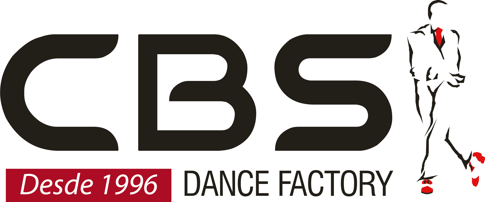
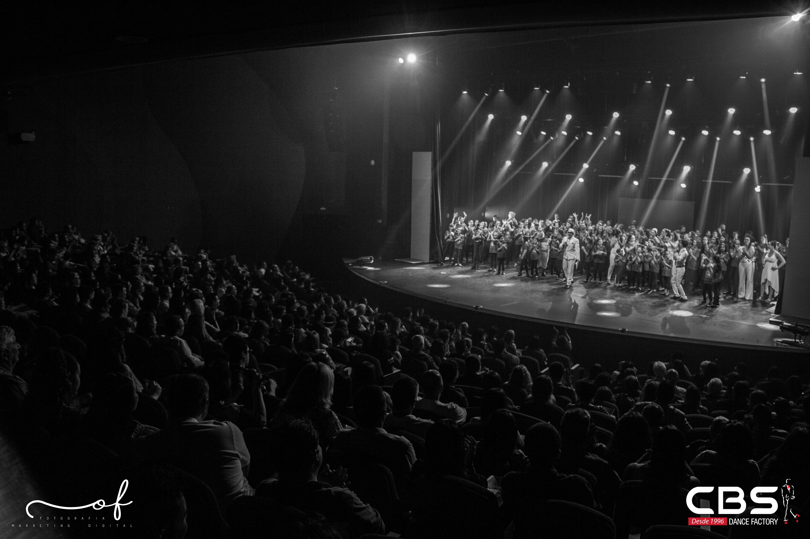
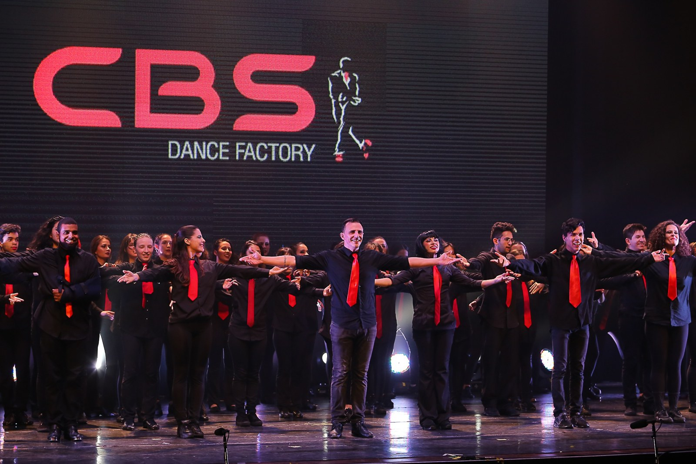
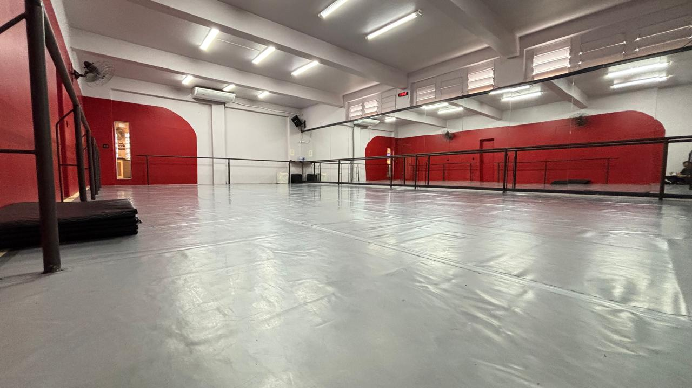
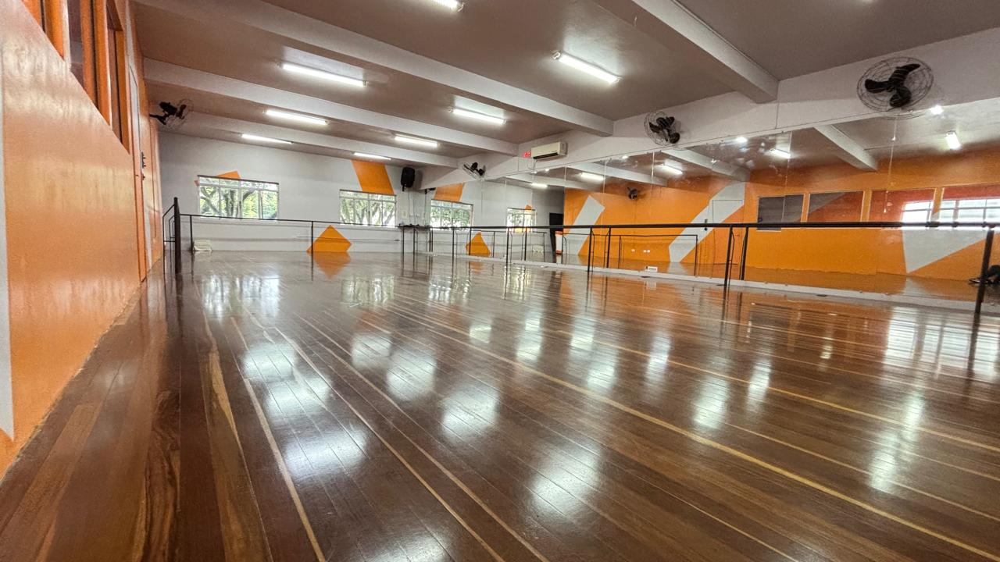
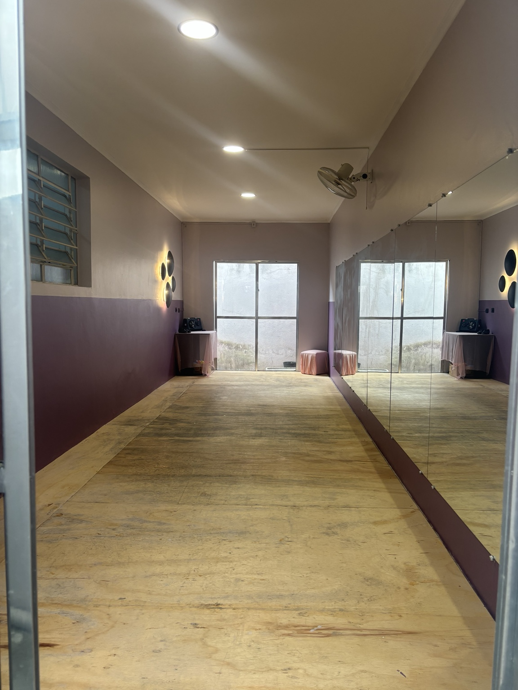
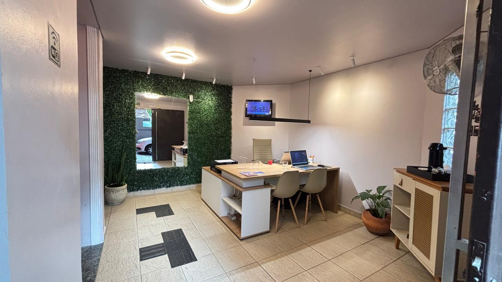

Descubra seu estilo
Escolha uma modalidade que desperte sua curiosidade. Pode ser aquela que você sempre quis experimentar.


ESCOLA DE DANÇA • SÃO JOSÉ DOS CAMPOS
Existe uma dança que tem tudo a ver com você.
Encontre a sua na CBS Dance Factory.
01 / ENCONTRE SEU RITMO
Do primeiro passo a novos desafios.
Explore os estilos e converse com a gente
para encontrar a turma que combina com você.
Clique em uma modalidade para conhecer a proposta e os horários. Confirme vagas e agendamento com nossa equipe.
SUA SEMANA EM MOVIMENTO
Escolha a modalidade e veja as turmas.
Depois, combine seu primeiro encontro com a CBS.
Grade fornecida pela CBS. Horários sujeitos a alteração; confirme a disponibilidade de vagas antes de comparecer.
SEU PRIMEIRO PASSO NA CBS
Escolha a modalidade que desperta sua curiosidade.
Agende uma aula experimental gratuita e venha conhecer a CBS.

DA SALA DE AULA PARA A VIDA.02 / NOSSA ESSÊNCIA
Uma escola se faz de pessoas. De quem chega com vontade de começar, de quem redescobre a dança e de quem escolhe ir além.
Desde 1996, a CBS faz parte da história da dança em São José dos Campos. Aqui, técnica e expressão caminham junto com o cuidado em cada encontro.
POR DENTRO DA CBS
Conheça nossas três salas e a recepção.
Na Vila Adyana, em São José dos Campos.

Espelhos e barras acompanham a prática em sala.

Um ambiente para explorar passos, ritmo e expressão.

Mais um espaço da CBS para a prática da dança, com espelhos e piso de madeira.

Nossa recepção é o ponto de partida para conhecer a escola.
03 / SEU PRIMEIRO PASSO
Você não precisa ter todas as respostas.
A gente ajuda a encontrar o caminho.
Escolha uma modalidade que desperte sua curiosidade. Pode ser aquela que você sempre quis experimentar.
Conte sua idade, experiência e disponibilidade. Confira a grade e agende sua aula experimental gratuita.
Combine sua visita com nossa equipe e venha conhecer de perto a escola e a sua próxima turma.
QUEM VIVE A CBS
“Professores e funcionários muito acolhedores e prestativos”
“É uma escola excelente, ambiente acolhedor, organizada.”
Seleção de trechos de avaliações públicas consultadas em 23/10/2026.
04 / ANTES DE COMEÇAR
Você pode procurar a CBS mesmo sem experiência. Nossa equipe ajuda a identificar uma turma adequada ao seu momento e às vagas disponíveis.
Confira os horários na grade acima ou na descrição de cada modalidade. Para valores e disponibilidade de vagas, fale com nossa equipe pelo WhatsApp.
Sim! Você pode agendar uma aula experimental gratuita. Escolha a modalidade e fale com nossa equipe para encontrar a turma adequada e confirmar a disponibilidade.
A CBS tem propostas para diferentes fases da vida. Informe a idade no atendimento para consultar as modalidades e turmas disponíveis.
Na Rua Major Vaz, 52, Vila Adyana, em São José dos Campos, SP. Veja a localização na seção abaixo e combine sua visita.
O PRÓXIMO MOVIMENTO É SEU.
Conte pra gente qual dança você quer viver.
Fale com a CBS no WhatsApp